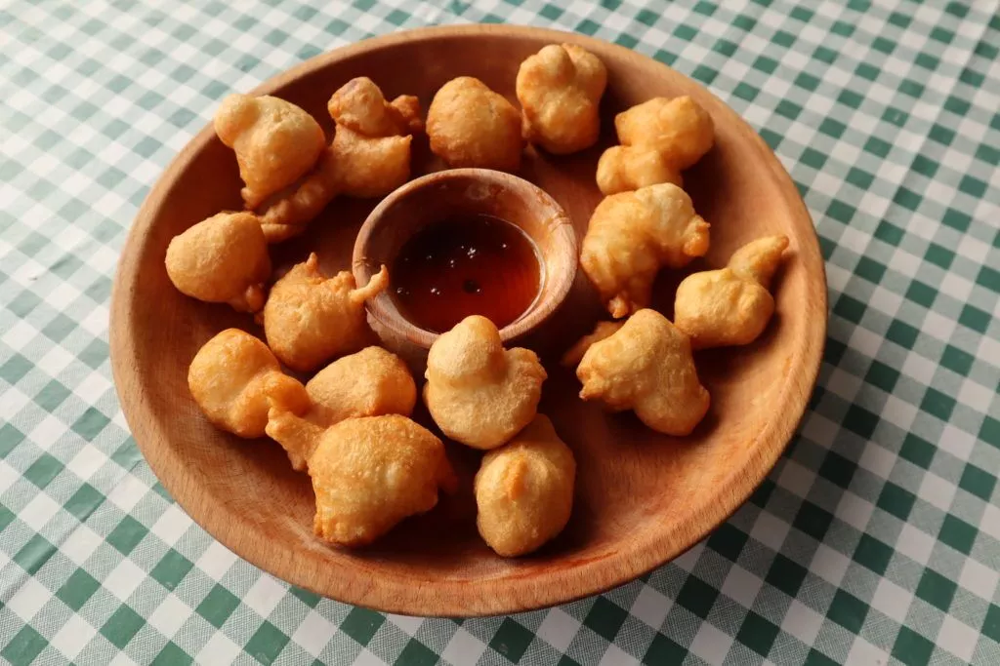

Montenegrin Priganice

Description:
A sort of Montenegrin doughnut, this meal is best eaten as breakfast and dipped in molasses, honey, or feta cheese.
Ingredients
Steps
- First do this
- Then do this
- Thirdly, add eggs
- Cook
- Voila! Enjoy! Serve with honey or molasses for the best experience!